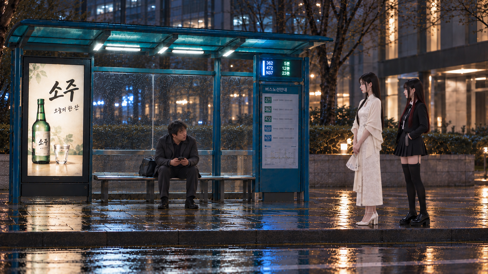
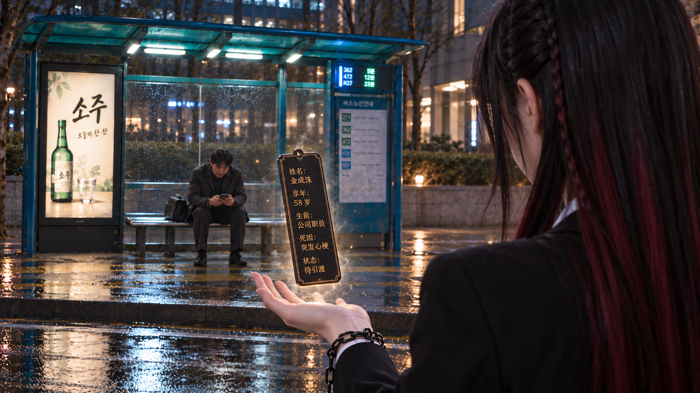
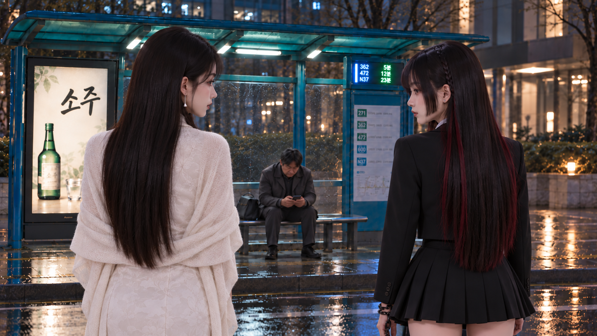
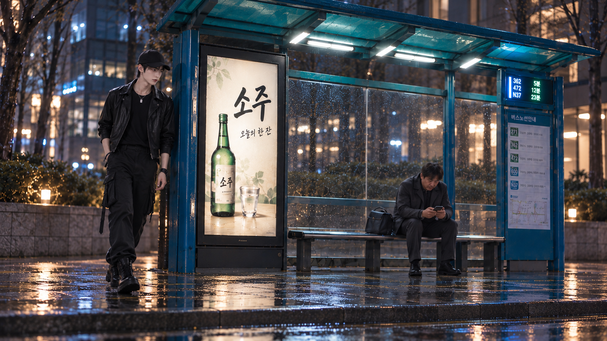
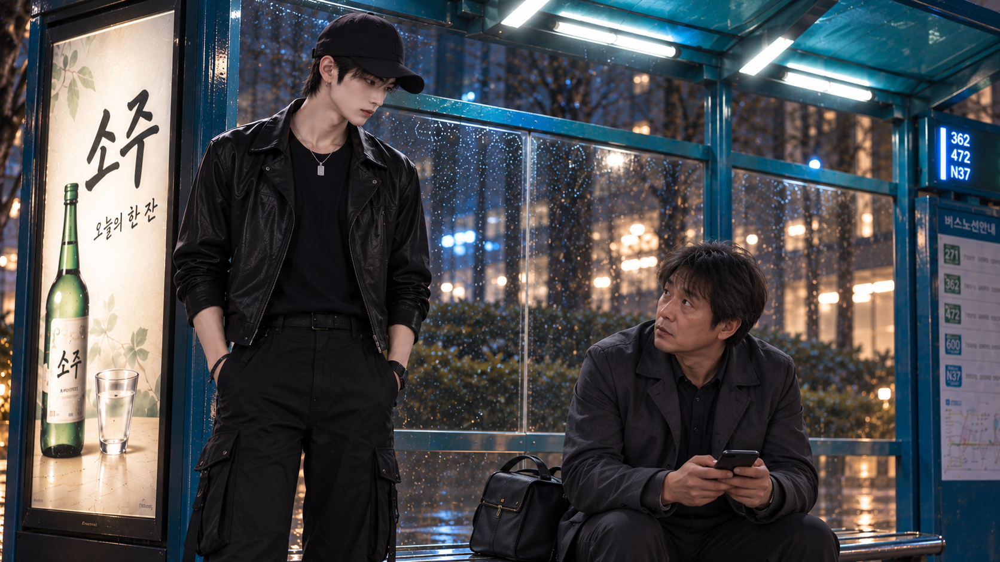
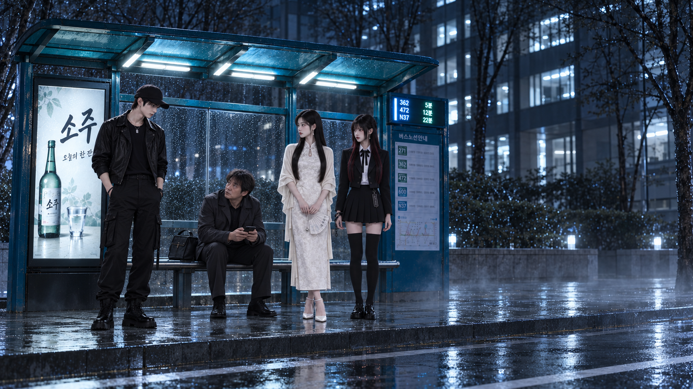
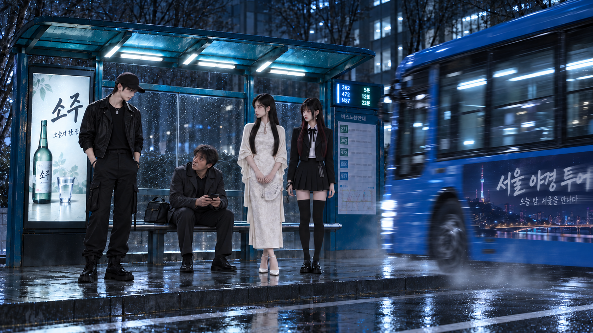

第一场 · 公交车站
按新场景与原始人物设定制作的7张分镜 · 待审核

01 · 大叔听铃向右侧姐妹看去大叔仍坐着，视线朝画面右侧的姐妹。
1672 × 941 · 保存PNG原图

02 · 黑棠左手悬浮令牌·侧45度大背影黑棠背影在前景、令牌悬于左掌上方，大叔坐在前方中景；令牌文字为可替换的虚构生平道具信息。
1672 × 941 · 保存PNG原图

03 · 姐妹背影侧脸对视·大叔居中低头看手机采用已去掉黑棠新增垂坠耳饰的修正版；姐妹近、大叔远，从肩背间隙看见大叔。
1672 × 941 · 保存PNG原图

04 · 崔赫从公交站左侧转出崔赫使用第一场原始鸭舌帽和皮夹克A套，从公交亭左端绕出。
1672 × 941 · 保存PNG原图

05 · 崔赫站在左侧·大叔抬头·半身镜头崔赫站姿较高、大叔坐姿较低；保留正常夜景灯光。
1672 × 941 · 保存PNG原图

06 · 四人冷色阴间转场·无暖黄光崔赫在左、大叔坐中间看他、白辞黑棠在右；广告箱、窗光与路面反射均转为冷色。
1672 × 941 · 保存PNG原图

07 · 蓝色公交从右侧驶入·韩文广告运动模糊在第六张基础上加入从右侧进入、向左行驶的蓝色公交；去掉了橙色侧标灯，广告字形保留可辨识核心与横向拖影。
1672 × 941 · 保存PNG原图